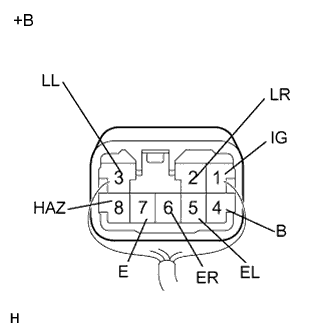

ВЫКЛЮЧАТЕЛЬ ПРОБЛЕСКОВОГО РЕЖИМА УКАЗАТЕЛЯ ПОВОРОТА В СБОРЕ > ПРОВЕРКА БЕЗ СНЯТИЯ С АВТОМОБИЛЯ |
| 1. ПРОВЕРЬТЕ ВЫКЛЮЧАТЕЛЬ ПРОБЛЕСКОВОГО РЕЖИМА УКАЗАТЕЛЯ ПОВОРОТА В СБОРЕ |
|  |
Измерьте сопротивление в соответствии со значениями, приведенными в таблице ниже.
| Контакты для подключения диагностического прибора | Состояние | Заданные условия |
| 5 (E) - масса | Всегда | Менее 1 Ом |
Измерьте напряжение в соответствии со значениями, приведенными в таблице.
| Контакты для подключения диагностического прибора | Состояние | Заданные условия |
| 2 (LR) - 7 (E) | Выключатель аварийной сигнализации выключен | Менее 1 В |
| Выключатель аварийной сигнализации включен | Поочередное изменение между 11 - 14 В и 1 В и ниже (60-120 раз в минуту) | |
| 3 (LL) - 7 (E) | Выключатель аварийной сигнализации выключен | Менее 1 В |
| Выключатель аварийной сигнализации включен | Поочередное изменение между 11 - 14 В и 1 В и ниже (60-120 раз в минуту) | |
| 4 (B) - 7 (E) | Всегда | 11–14 В |
| 5 (EL) - 7 (E) | Зажигание включено Центральный переключатель освещения (поворот влево) выключен | 9 В или более |
| Зажигание включено Центральный переключатель освещения (поворот влево) включен | Менее 1 В | |
| 6 (ER) - 7 (E) | Зажигание включено Центральный переключатель освещения (поворот вправо) выключен | 9 В или более |
| Зажигание включено Центральный переключатель освещения (поворот вправо) включен | Менее 1 В | |
| 8 (HAZ) - 7 (E) | Выключатель аварийной сигнализации выключен | 9 В или более |
| Выключатель аварийной сигнализации включен | Менее 1 В |
| *a | Вид спереди разъема со стороны жгута проводов: (к выключателю проблескового режима указателя поворота в сборе) |